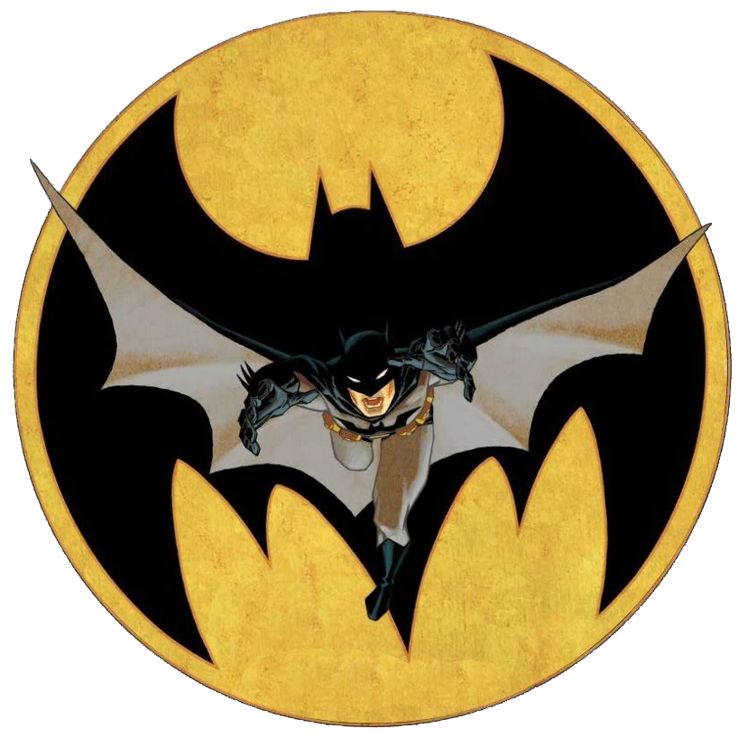

Batman:
La identidad secreta de Batman es Bruce Wayne (Bruno Díaz en algunos países de habla hispana),141516 un multimillonario magnate empresarial y filántropo dueño de Empresas Wayne en Gotham City. Después de presenciar el asesinato de sus padres, el Dr. Thomas Wayne y Martha Wayne en un violento y fallido asalto cuando era niño, juró venganza contra los criminales, un juramento moderado por el sentido de la justicia..
